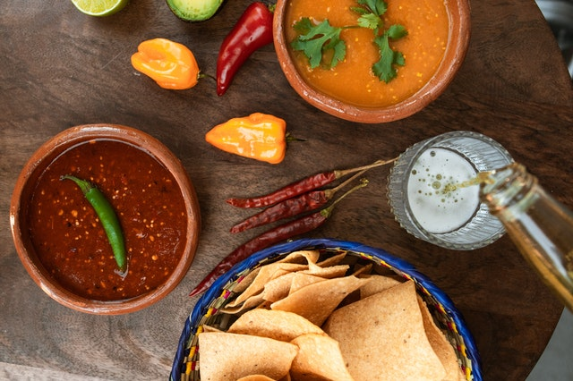

Homemade Salsa

Easy Homemade 5-minute Salsa
This homemade salsa is a recipe you need to have in your back pocket. It is a salsa recipe that is quick and easy and can be whipped up in no time. Need to feed some hungry teenagers? Feed them chips and salsa. Need a quick and easy appetizer? The answer is chips and salsa.
Easy Homemade Salsa made with tomatoes, cilantro, jalapeno, green chilies, green onions, and salt. This is the quickest homemade salsa and can be made in a blender in 5 minutes!
Ingredients
- (1) 26-ounce can Whole or Diced Tomatoes
- 1 bunch Cilantro Leaves (stems chopped off)
- 1 small Jalapeno (or ½ jalapeño for less heat)
- 6 Green Onions (sliced)
- 4 ounce can Diced Green Chiles
- 1 to 2 Fresh Roma Tomatoes (diced)
- 1-2 teaspoons Salt
Steps
- Add whole canned tomatoes, cilantro leaves, and jalapeno into a blender. Blend until pureed. You don't want to overmix or the salsa will become foamy.
- Pour into a large bowl. Add sliced green onions, diced green chiles, diced fresh roma tomatoes, and salt to taste. Add more salt if needed.
- Serve with chips at room temperature.